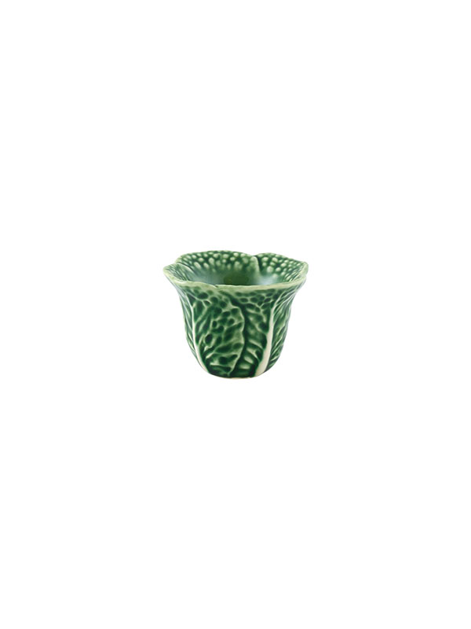
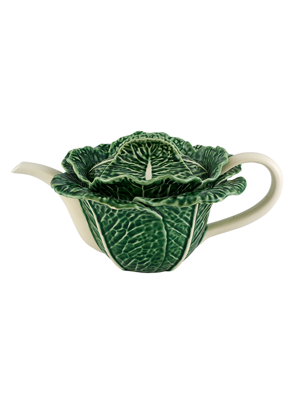
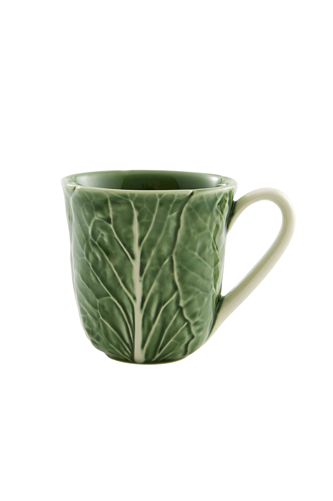
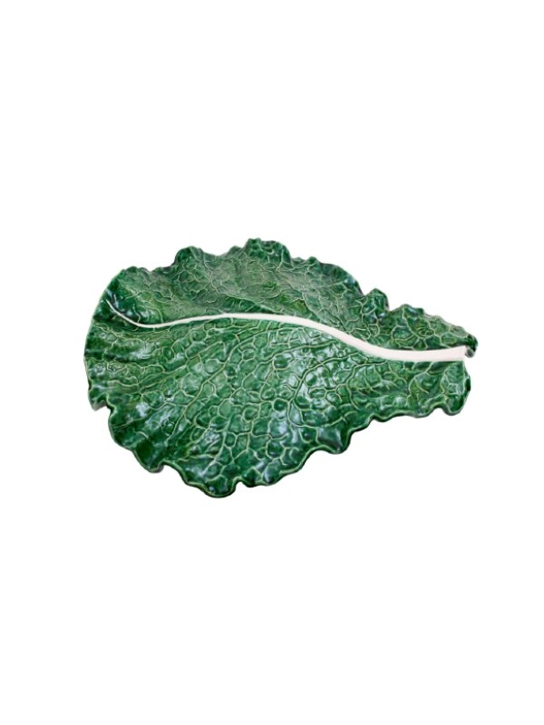
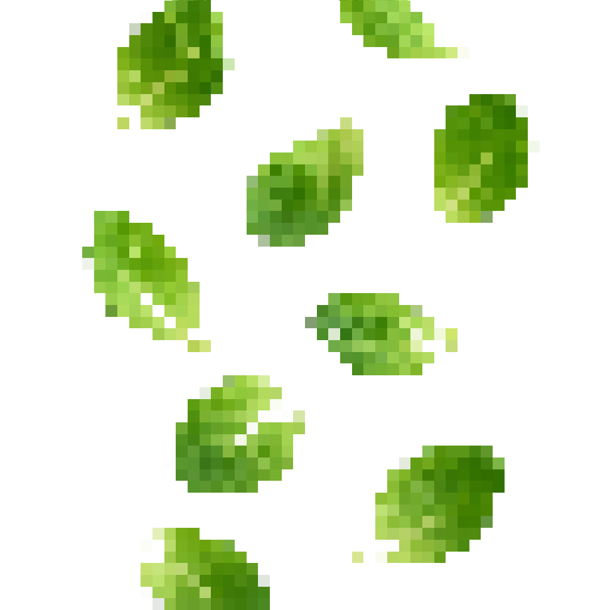
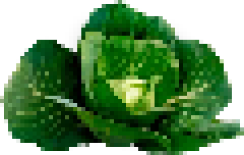

Cabbage
In Portugal everyone knows and most likely owns a piece of Bordalo Pinheiro ceramics. If there were a poll on which is the most commonly owned, the cabbage would undoubtedly come out on top. The cabbage was the first ceramic design that Bordalo Pinheiro came up with. It was an instant success in the commercial market being replicated thousands of times, always handmade in his factory. It even reached success in the United States, and the United Kingdom going on to win multiple awards for it’s design. This was before Portugal fell into dictatorship, and the trade borders were inevitably closed. The cabbage became a symbol of joy, and creativity inspiring many other artists to either join Bordalo Pinheiro in creating his vision, or coming up with their own unique designs. It’s a staple of Portuguese culture that can be found internationally. There’s even devoted collectors that buy imperfect pieces to add to their vast collection.
Em Portugal toda a gente conhece, e provavelmente tem uma peça de cerâmica Bordalo Pinheiro. Se houvesse um voto em qual peça é mais popular, a couve ganhava sem dúvida. A couve foi a primeira peça de cerâmica que o Bordalo Pinheiro inventou. Foi um sucesso instantâneo no mercado comercial sendo replicada milhares de vezes, sempre dentro da fábrica dele. Até teve imenso sucesso na América e nos Estados Unidos, ganhando vários prêmios por seu design. Isto foi antes de Portugal cair numa ditadura, e as fronteiras de troca fecharem. A couve passou a ser um símbolo de alegria, e criatividade inspirando outros artistas a ajudarem Bordalo Pinheiro a concretizar a visão dele, ou serem inspirados a criarem a sua própria visão. A couve é uma peça icônica da cultura Portuguesa que pode ser encontrada internacionalmente. Até existem colectores dedicados a encontrar couves imperfeitas para adicionar à sua vasta coleção.





